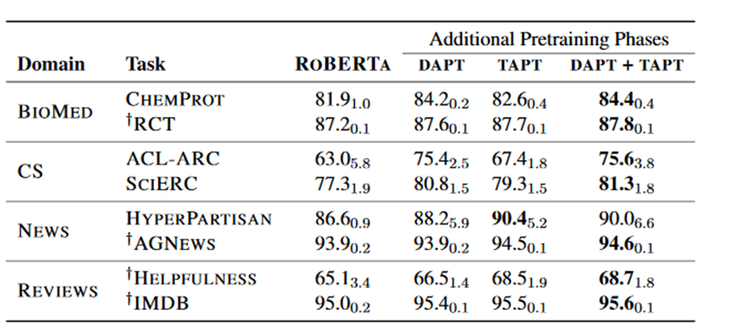

Don’t Stop Pretraining
In the past two years the best performing NLP models have been based on transformer models trained on an enormous corpus of text. By understanding how language in general works they are much more effective at detecting sentiment, classifying documents, answering questions and translating documents. However in any particular case we are solving a particular task in a certain domain. Can we get a better performing model by further training the lanugage model on the specific domain or task? The ACL 2020 paper Don’t Stop Pretraining answers this in the affirmative.
Take the Hyperpartisan News Detection task from SemEval 19; given a News Article text determine whether it is partisan. One approach is to train a classifier on a modern transformer such as RoBERTa. But maybe performing domain adaptation by further training the language model on a large amount of text from the news domain, such as the realnews dataset, before training the classifier will improve results. Or we could perform task adaptation by further training the language model on the Hyperpartisan News dataset before training the classifier could improve results.
In Don’t Stop Pretraining they pick 8 classification tasks from 4 different domains; News, Reviews, Biomedical and Computer Science. They show in each case that performing domain adaptation (DAPT) for RoBERTa gives a better classifier (and adapting to an irrelevant domain gives a worse classifier). They also show that task adaptation (TAPT) also generally results in a better classifier. And the best results consistently come from performing DAPT and then TAPT. See below for the F1 scores (with standard deviation in subscript) for each strategy.

This is a very clean paper; they’ve carefully shown in many different cases fine tuning a language model on data closer to the target classification task improves performance. The result is not very surprising but they’ve amassed enough evidence to demonstrate this strategy works consistently and can contribute significant improvements over baselines. They’ve also documented the hyperparameters and training strategy and released the code; hopefully this means its relatively straightforward to implement. They comment that the experiments were performed on a single Google Cloud v3-8 TPU; so I would expect this kind of adapatation could be performed for several hundred dollars.